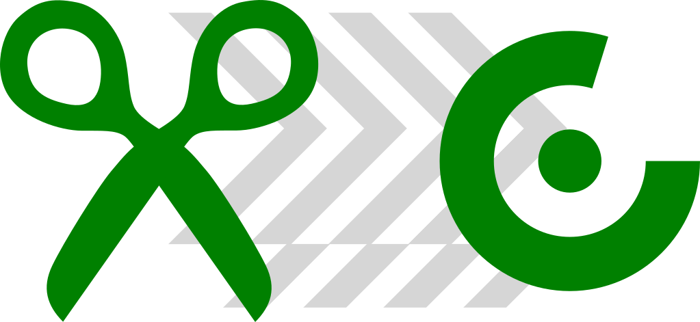
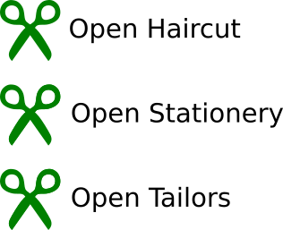
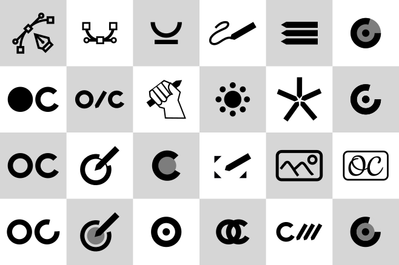
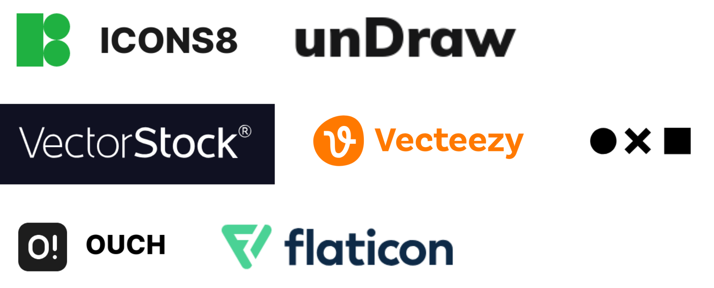
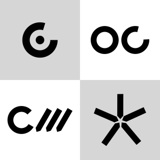
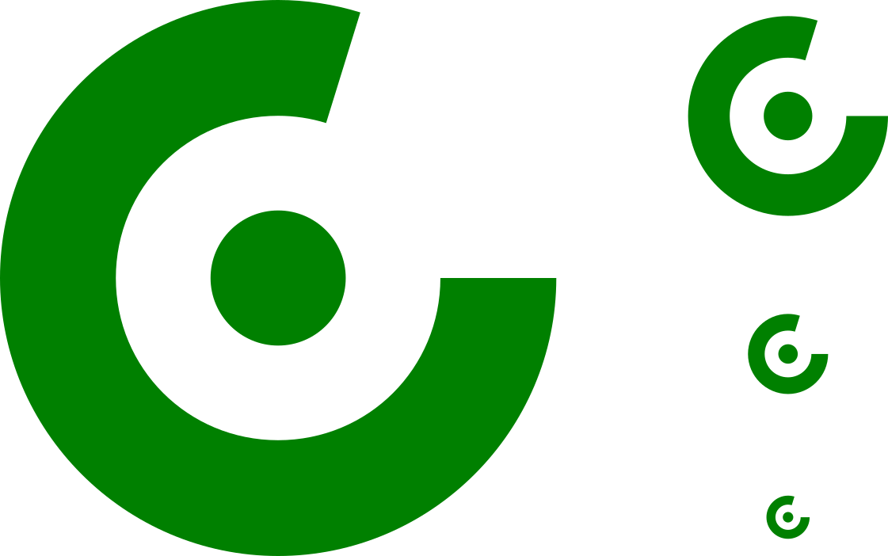
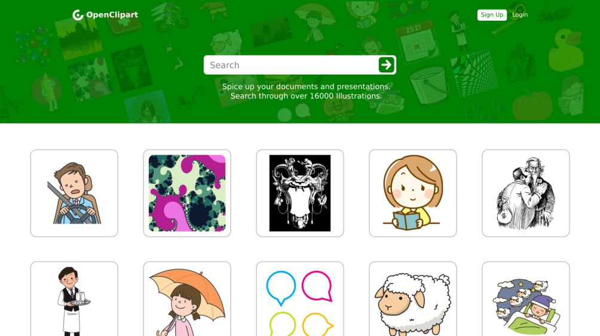
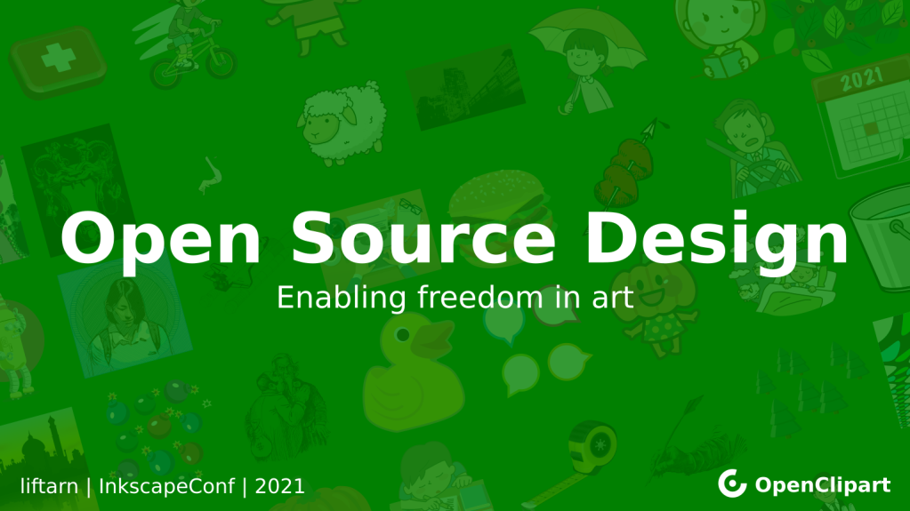
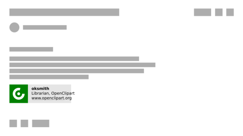
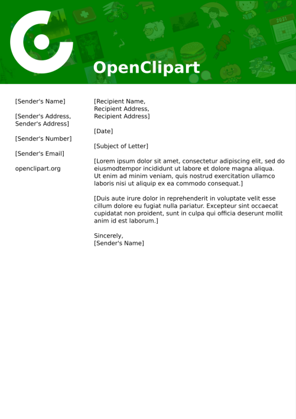

OpenClipart Logo Redesign

Open Clipart is an illustration sharing platform.
The name "Clipart" stands for "art" that used to be "clipped" from magazines and newspapers, and paster into personal documents, assignments, etc.
The name "Open" comes from their values of freedom and open source-- the source files are available with complete freedom to edit, share and use them.
Goals
- Make unique and identifiable
- Scissors can be easily confused
- Keep simple and easy to remember
- Keep usable in small sizes

Exploration

Keywords for redesign
- Illustration
- Community
- Freedom

Notice how other companies struggle to represent the broad topics, styles, and meanings of "illustration".

The shortlisted logos look good in smaller sizes, and they represent
community and collaboration.
Most others seem generic, have too much complexity, or they stand for
"vector" art, which means nothing to most people
Result

A unique and memorable logo, that can be used in various sizes, and contains
the letter "O" and "C" for "OpenClipart".
Usage and examples below:



